Typeset Viewer
Open a .typ, .md, or .tex file and read it as a finished PDF that refreshes when you save and keeps your place. Select a passage to look it up, add a note, explain it, or start a source-aware review without leaving the document.
Free. Requires macOS 14 or later on Apple silicon. Signed and notarized, so it opens without a security warning.
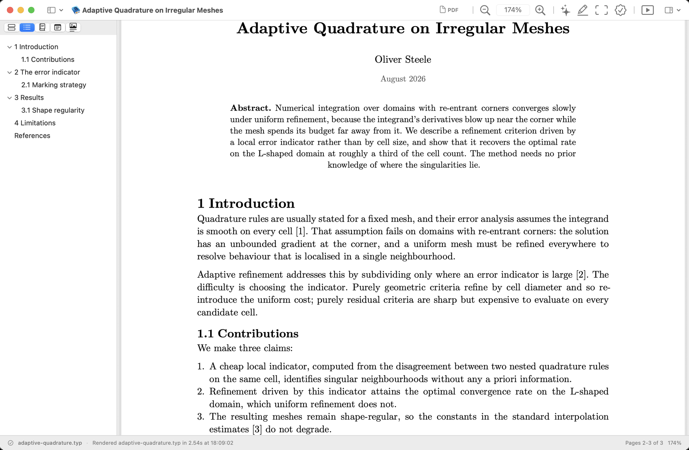
A note from the author
I like to edit a LaTeX file in one window and watch it refresh in another. So I wrote an app for that.
I wanted to keep using my editor and the command-line tools behind it. Typeset Viewer runs latexmk, typst, or Pandoc and puts the rendered PDF in a native window. It builds in a temporary directory, so working folders do not fill with .aux and .log files.
Typst works the same way. I've moved to Typst for everything I'm not submitting somewhere that insists on LaTeX.
— Oliver Steele
Read and navigate
Open a .typ, .md, .tex, or PDF file. Typeset Viewer follows included source and .bib files, renders again when they change, and keeps your reading position. It also restores open documents when you relaunch it.
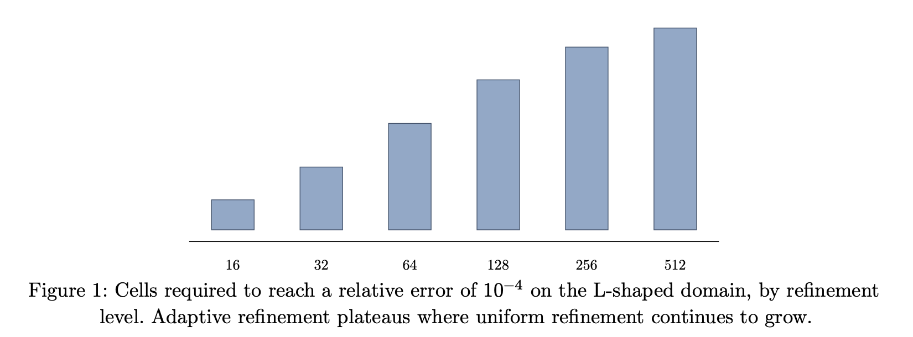
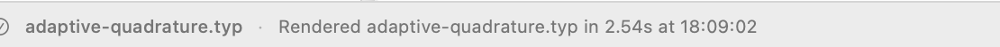
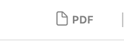
The title bar has a PDF icon. Drag it to the Finder or into a mail message. You can also export, print, or use --render from a script.
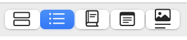
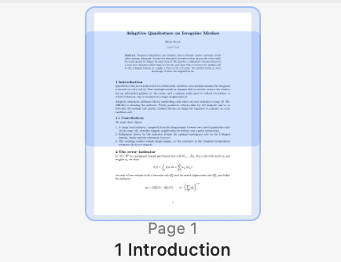
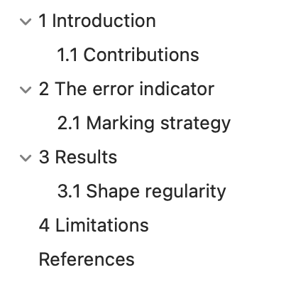
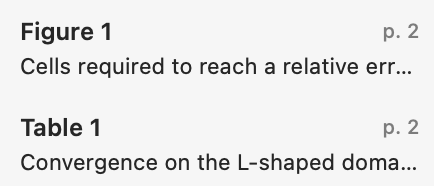
Each window has a sidebar. It shows page thumbnails, the table of contents, the figures and tables, the works cited, or your notes. All five are available for LaTeX and Typst; Markdown has the first two. The thumbnails are labelled with the heading each page opens on, and the figure list keeps the captions, so you can find a page by what's on it instead of by number.
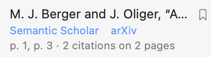
Each work cited gets links to its Semantic Scholar and arXiv pages, and a count of the places in your paper that cite it. You can add it to a reading list for papers you want to come back to.
Paste an arXiv or PDF URL to open a paper directly. The app downloads it and keeps a copy.
An Overleaf project works too, if you've switched that project on for git. The app clones the repository, builds from that, and can pull or push changes.
Annotate and review
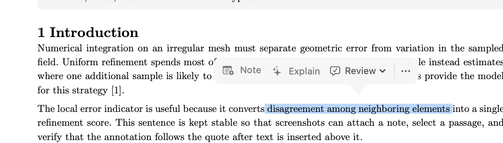
Select a word to look it up or search the web. Select a longer passage to add a note, ask for an explanation, or choose a review prompt. The action bar appears after selection and dismisses when you keep reading.
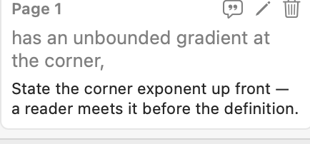
Highlight a passage to attach a note to it. The note remembers the words it was attached to rather than a position on the page, so it stays where it belongs after you rewrite the paragraph above it. Notes come along when you export or print.
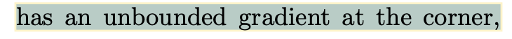
Built-in review tools can proofread the source, tighten its prose, or check that cited works appear in the bibliography. The document conversation handles open-ended questions about what you are reading. Suggestions come back as cards you accept or reject one at a time, and nothing is written to your file until you say so.Review and document conversation need Claude Code (claude) or Codex (codex) installed. These tools stay off until you choose a backend.
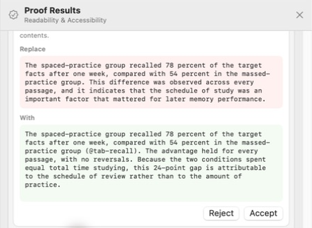
That panel can become a quiz. It asks a question grounded in the paper and keeps the answer hidden until you're ready. Mark a miss as Forgot, or say whether you recalled it partially, with effort, or easily; each choice shows when the question will return. You can continue the question in the Agent conversation, or jump back to the page and passage that supports it. This works for source documents and ordinary PDFs, as long as the PDF has searchable text.
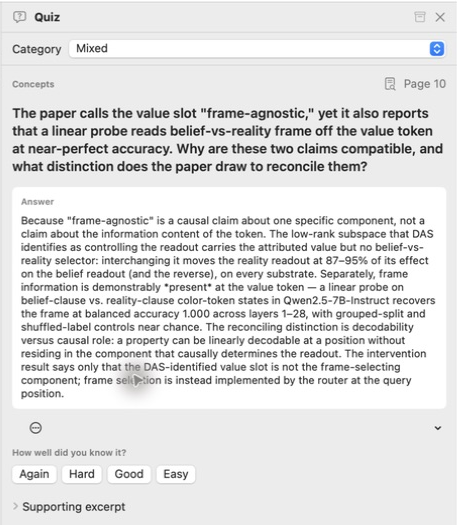
Present
Presentation mode displays a Beamer, Typst, or PDF talk as slides and provides a phone remote.Presentation mode puts a QR code on the screen. Scan it and your phone becomes the remote: next, previous, a grid of slides to jump from, and a laser pointer that you aim by drawing on the picture of the current slide. Getting a laptop and a phone onto the same network is sometimes its own adventure, particularly through a VPN; if both are running Tailscale, it will use that instead.
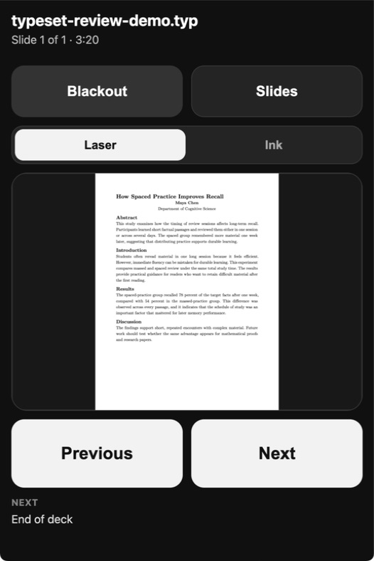
Feature reference
- Files and rendering
- Typst through the bundled
typst; Markdown through Pandoc; LaTeX throughlatexmk; PDFs open directly. - Refresh and continuity
- Watches source, included files, and
.bibfiles; renders on save; preserves your place; restores open documents. - Navigation
- Page thumbnails with headings; table of contents; figures and tables index; works cited; notes sidebar.
- References and reading list
- Citation counts; Semantic Scholar and arXiv links; saved papers collected from arXiv IDs or URLs.
- Notes and output
- Text-anchored highlights and notes; notes included in exports and printing; draggable title-bar PDF.
- Built-in review and agent
- Selection actions; document conversation; proofreading, tightening, and citation checks; source changes accepted or rejected one at a time.
- Paper quizzes
- Source-backed questions; hidden answers; four recall ratings; scheduled review; links to supporting passages.
- URLs and Overleaf
- Cached PDF URLs; direct arXiv downloads; Overleaf projects over git with pull, push, and sync.
- Presentation
- Page-fit slides; phone remote; slide grid; blackout; laser pointer; ink; previous and next controls.
- Command-line automation
--renderturns Typst, Markdown, or LaTeX source into a PDF from a script and prints the output path;--doctorreports the compilers and helper tools the app found, with their paths and versions.
Installing
Unzip the download and drag Typeset Viewer to your Applications folder. Typst is bundled, so .typ files work immediately.
The other formats use tools you may already have: Markdown needs Pandoc,brew install pandoc LaTeX needs latexmk,Install MacTeX or the smaller BasicTeX. and Overleaf sync needs git. The app says so when one is missing, and --doctor prints everything it resolved.
It updates itself through Sparkle. You can also use Check for Updates… in the app menu.
Bugs and feedback
This is a one-person project and it is still before 1.0, so expect rough edges. Reports are welcome; I read all of them.
Report a bug, or use Help ▸ Report a Bug… in the app, which fills in your version and environment for you. For anything else, email me.
Typeset Viewer is free but closed-source. The repository behind this page holds the releases, the issue tracker, and this page itself. The application source is private and stored elsewhere.